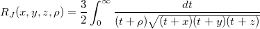

Elliptic_integral_rj
Elliptic-integral-rj-func
Definition:
calculates an approximation to the integral
- 
Where x,y,z ≥ 0 , /math-d2606be4e0cd2c9a6179c8f2e3547a85.png "\rho") ≠0 and at most one of x, y and z is zero.
≠0 and at most one of x, y and z is zero.
If <0, the result computed is the Cauchy principal value of the integral.
For more information please review the s21bdc function in the NAG document.
Parameters:
- x (input, double)
- The argument x of the function.
- y (input, double)
- The argument y of the function.
- z (input, double)
- The argument z of the function.
- r (input, double)
- The argument r of the function.
- Constraint: x, y, z ≥ 0.0, r ≠ 0.0 and at most one of x, y and z may be zero.
- Rj (output, double)
- Approximate value of the integral